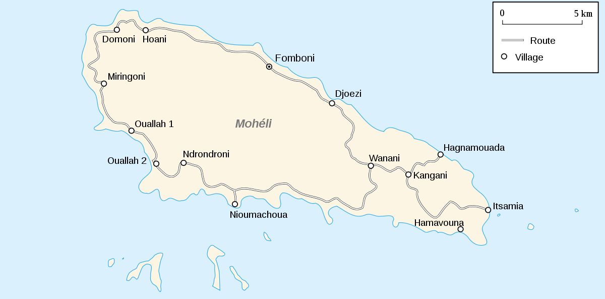
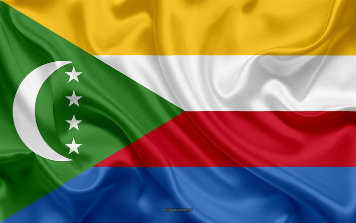

LES VILLES
Fomboni (capitale de l’île)
Djoièzi
Bandar Salama
Boingoma
Mbatsé 1
Mbatsé 2
Nioumachoua
Ndrodroni
Ouallah 1
Ouallah 2
Nremeani
Miringoni
Hoani
Domoni
Hamba
Barakani
Wanani
Mlabanda
Siry Zouridani
Nkangani
Hagnamoida
Itsamia
Hamavouna
Moihani
MOHELI
Mohéli, aussi appelée Mwali en shikomori, est à la fois un État fédéré de l'Union des Comores
et l'une des quatre principales îles qui composent l'archipel des Comores, lui-même situé dans l'océan Indien à
l'entrée nord du canal du Mozambique. C'est la plus petite et la plus touristique des trois îles de l'Union des Comores.
Sa population était en 2015 d'environ 52 360 personnes1 et sa capitale est Fomboni.
Les principaux groupes ethniques qui
l'ont composée, comme pour toutes les autres îles, sont d'origines bantoue, arabe, malaise, malgache et européenne.
Mais la religion pratiquée par l'ensemble de la population est l'islam.
L'île de Mohéli est la plus ancienne des îles
de l'Union des Comores, et contrairement aux autres,
elle possède des sols argileux qui peuvent retenir l'eau. C'est également la plus petite de ces îles.
A visité

CAPITALE,FOMBONI
Fomboni (en arabe : فومبوني) est la capitale de l'île de Mohéli aux Comores. Elle compte environ 20 000 habitants, soit plus d'un tiers de la population insulaire, et elle forme la troisième plus grande ville de l'Union des Comores. Situé sur la côte Nord de l'île, son front de mer est protégé par un récif corallien ; par temps clair, l'on peut ainsi apercevoir depuis Fomboni les îles adjacentes de Grande Comore et d'Anjouan.
PARC MARIN DE MOHELI
Le parc marin de Mohéli est un parc marin qui protège les eaux du canal du Mozambique situées le long de la côte sud de l'île de Mohéli près de la commune de Nioumachoua. Il est un des deux parcs marins de l'archipel des Comores et, celui-ci, relève de l'Union des Comores. Il est particulièrement utile à la protection des tortues marines, dont on recense de nombreux lieux de ponte dans les limites du parc.
MOHELI |
|
|---|---|
|  Carte Anjouan |
|
| Pays | comores |
| Archipel | comore |
| Localisation | Canal du Mozambique (océan Indien) |
| coordonées | 12° 19′ 28″ S, 43° 44′ 22″ E |
| Superficie | 290 km2 |
| geographie | ile volcanique |
| Population | 52 360 hab. (2015) |
| Densité | 180,55 hab./km2 |
| Gentilé | Mohélien, Mohélienne |
| Plus grande ville | Fomboni |
| Autres informations | |
| Découverte | Préhistoire |
| Fuseau horaire | UTC+3 |
LES TORTUES
Les tortues marines sont intégralement protégées au Comores. Toutefois, le braconnage pour leur chair et leurs œufs reste une menace majeure : selon les dernières estimations, le taux de femelles reproductrices braconnées à Mohéli serait de 35%. Itsamia, petit village de pêcheurs est situé l’extrémité est de Mohéli. Les 5 plages adjacentes au village a ccueillent la moitié de la population de femelles de tortues vertes venant pondre sur l’île, estimée à 2500 individus par an.

ILOT DE NYUMASHIWA
Les îlots de Nyumashiwa qui sont situés au large de la côte sud de Mohéli sont les plus grands et les plus connus. Leurs noms commencent tous par shissiwa qui signifie île. Ils ont tous le même aspect massif.
LAC D'ITSIMIA
Le lac d'Itsamia est une caldeira à laquelle les habitants prêtent des vertus magiques, ce qui a permis la préservation d'espèces végétales et animales endémiques. Il est aujourd'hui classé sur la liste du patrimoine mondial de l'Unesco. Le parc marin de Mohéli sur la commune de Nioumachoua Les plages, appréciées tant pour la baignade que pour la plongée sous-marine, mais aussi en tant que site de reproduction des tortues vertes.